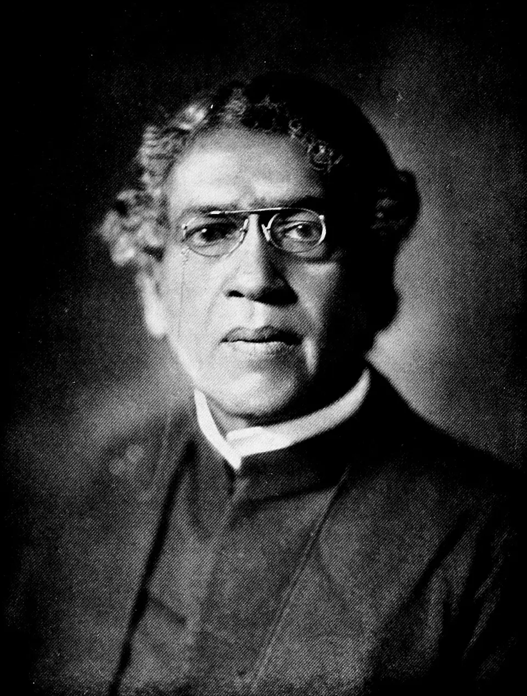

1858

Born 1858
Jagadish Chandra Bose
- Physics
- Biology
He worked on the properties of plants and showed that plants respond to external stimuli such as light, sound, and touch.
Also remembered for early work in radio and microwave science.